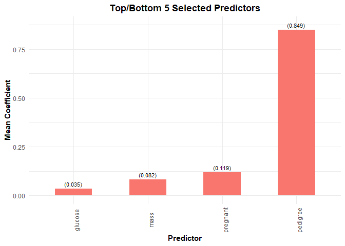

The goal of bolasso is to implement model-consistent Lasso estimation via the bootstrap
1
.
Installation
You can install the development version from GitHub with:
# install.packages("devtools")
devtools::install_github("dmolitor/bolasso")Variable selection with bolasso
To illustrate the usage of bolasso, we’ll use the Pima Indians Diabetes dataset to determine which factors are important predictors of testing positive for diabetes. For a full description of the input variables, see the link above.
Load requisite packages and data
library(bolasso)
library(readr)
diabetes <- read_csv(
"https://raw.githubusercontent.com/jbrownlee/Datasets/master/pima-indians-diabetes.csv",
col_names = c(paste0("V", 1:8), "outcome")
)First, we run 100-fold bootstrapped Lasso with the glmnet implementation. We can get a rough estimate of the elapsed time using Sys.time().
start.time <- Sys.time()
model <- bolasso(
outcome ~ .,
data = diabetes,
n.boot = 100,
implement = "glmnet",
family = "binomial"
)
Sys.time() - start.time
#> Time difference of 29.13701 secsWe can get a quick overview of the model by printing the bolasso object.
model
#> ------------- 100-fold bootstrapped Lasso -------------
#>
#> Model matrix dimensions:
#> - 8 Predictors
#> - 768 Observations
#>
#> Selected variables:
#> - 6/8 predictors selected with 90% threshold
#> - 4/8 predictors selected with 100% thresholdExtracting selected variables
Next, we can extract all variables that were selected in 90% and 100% of the bootstrapped Lasso models. We can also pass any relevant arguments to predict on the cv.glmnet or cv.gamlr model objects. In this case we will use the lambda value that minimizes OOS error.
selected_vars(model,
threshold = 0.9,
select = "lambda.min")
#> # A tibble: 7 x 2
#> variable mean_coef
#> <chr> <dbl>
#> 1 Intercept -8.20
#> 2 V1 0.120
#> 3 V2 0.0347
#> 4 V3 -0.0118
#> 5 V6 0.0866
#> 6 V7 0.849
#> 7 V8 0.0139
selected_vars(model,
threshold = 1,
select = "lambda.min")
#> # A tibble: 5 x 2
#> variable mean_coef
#> <chr> <dbl>
#> 1 Intercept -8.20
#> 2 V1 0.120
#> 3 V2 0.0347
#> 4 V3 -0.0118
#> 5 V6 0.0866Plotting selected variables
We can also quickly plot the selected variables at the 90% and 100% threshold values.
plot(model, threshold = 0.9)
plot(model, threshold = 1)
References
1
Bach, Francis. “Bolasso: Model Consistent Lasso Estimation through the Bootstrap.” ArXiv:0804.1302
Cs, Math, Stat
, April 8, 2008. http://arxiv.org/abs/0804.1302.